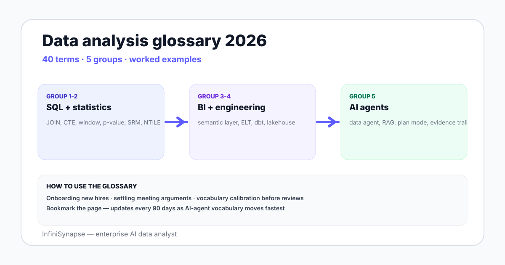

Data Analysis Glossary in 2026: 40 Terms Explained
A 2026 data analysis glossary with 40 terms across SQL, statistics, BI, data engineering, and AI agents — each defined with a worked example and a deeper link.
AuthorInfiniSynapse Research, product and data architecture team
Published2026-06-28 · Last verified 2026-06-28 · Next review 2026-09-28
Evidence baseVendor documentation (PostgreSQL, MySQL, Snowflake, dbt), statistics references (Kohavi, Wasserstein), and field experience defining these terms across data teams.
Disclosure: Published by InfiniSynapse, an AI data analyst. The glossary is vendor-neutral; InfiniSynapse appears only under the AI-agent category for completeness.
TL;DR
A working glossary of 40 data analysis terms, grouped into SQL, statistics, BI and reporting, data engineering, and AI agents.
Each term has a one-sentence definition, a one-sentence worked example, and where relevant, a link to a deeper guide.
The list is opinionated — terms a working data analyst meets weekly in 2026, not an exhaustive encyclopedia.
Use it to onboard a new hire, settle a meeting argument, or sanity-check vocabulary before a stakeholder review.
Bookmark the page; the glossary updates every 90 days as terms migrate (e.g., "data lakehouse" replacing parts of "data warehouse").
This data analysis glossary covers 40 working terms in five groups — SQL, statistics, BI and reporting, data engineering, and AI agents. Each term gets a one-sentence definition, a worked example, and a link to a deeper guide. Designed to settle vocabulary in five minutes rather than be an encyclopedia.

SQL terms — the eight that come up daily
Term
Definition
Example
GROUP BY
Collapse rows into one row per group, with aggregates over the rest
SELECT region, COUNT(*) FROM orders GROUP BY region
HAVING
Filter groups after aggregation; WHERE filters rows before
HAVING SUM(amount) > 1000
INNER JOIN
Return only rows matched on both sides of the join key
orders o JOIN customers c ON c.id = o.customer_id
LEFT JOIN
Keep all rows from the left table; NULLs where right has no match
"customers who have not ordered" → LEFT JOIN with WHERE orders.id IS NULL
CTE
Named result set used in a later SELECT — readable multi-step logic
WITH monthly AS (...) SELECT * FROM monthly
Window function
Compute over a window of rows without collapsing — ranks, running totals
RANK() OVER (PARTITION BY region ORDER BY revenue DESC)
UPSERT / MERGE
Insert if new, update if existing, in one statement
MERGE INTO dim_customer USING src ON ... WHEN MATCHED THEN UPDATE
NULLIF
Guard divisions against zero by returning NULL when input matches
Onboard a new hire. Send the link; ask them to flag terms they cannot define in one sentence after reading.
Settle a meeting argument. "When you said cohort, did you mean signup cohort or feature cohort?" — point to the row.
Sanity-check vocabulary before a review. Skim before a stakeholder meeting; calibrate to the audience.
Bookmark the changes. The list updates every 90 days; the AI-agent section moves fastest.
Glossaries do not stop arguments — they make them shorter.
See agentic analytics terms in action
Connect a small Postgres or MySQL database read-only. Seed a business glossary. Ask one question and watch which glossary entries show up in the answer trail — plan mode, RAG retrieval, knowledge base binding, verification step, evidence trail, all visible together.
Forty terms across five categories — SQL (GROUP BY, HAVING, JOIN, CTE, window function, UPSERT, NULLIF, MERGE), statistics (p-value, confidence interval, sample size, SRM, NTILE, cohort retention, segments, standard error), BI and reporting (semantic layer, dimension, measure, drill-down, slowly changing dimensions, fact and dim tables, star schema, YoY and WoW, OLAP cube), data engineering (ELT, dbt, CDC, reverse-ETL, data contract, lakehouse, schema drift, materialized view), and AI agents (data agent, NL2SQL, RAG, knowledge base binding, plan mode, verification step, evidence trail, agentic analytics).
Why does this glossary update every 90 days?
Vocabulary moves fast in data work. Terms like "data lakehouse" replaced parts of "data warehouse" between 2020 and 2023, "agentic analytics" entered common use in 2024 and 2025, and "knowledge base binding" emerged in 2025 and 2026. A 90-day refresh cadence keeps the glossary aligned with current vendor and academic usage rather than freezing the vocabulary at one moment in time.
What is the difference between cohort and segment in data analysis?
A cohort groups records by the time they entered — March 2026 signups, users who first activated feature X this quarter, customers acquired through paid social in Q1. A segment groups records by an attribute — iOS users, customers in EMEA, accounts on the annual plan. Cohorts measure how things change over the entry timeline; segments measure how groups differ at a moment.
What is a window function in SQL?
A window function computes a value over a window of related rows without collapsing them. The classic examples are RANK, ROW_NUMBER, SUM as a running total, and LAG or LEAD to access previous or next rows. Unlike GROUP BY which collapses rows into one per group, a window function keeps every row and attaches a computed value derived from its window.
What is the difference between ELT and ETL?
ETL extracts data, transforms it inside the pipeline tool, and loads the modeled output into the warehouse. ELT extracts and loads raw data into the warehouse first, then transforms inside the warehouse — typically via dbt. The modern default for cloud warehouses like Snowflake, BigQuery, and Redshift is ELT because warehouse compute is now cheap enough to land raw data and model it in place.
What does knowledge base binding mean for an AI data agent?
Knowledge base binding pairs a database connection with a curated layer of business definitions that an AI agent retrieves as a tool call before drafting SQL. The bound layer contains entries like "active customer = ordered in last 90 days", "paid status = subscription_status IN (active, trialing)", or "MRR = sum of recurring subscription amounts excluding refunds". The agent uses these definitions to ground its SQL in your team operational vocabulary.
How is this glossary useful for onboarding a new analyst?
Send the link as part of week-one onboarding; ask the new analyst to flag any term they cannot define in one sentence after reading the table. Their flagged list becomes the agenda for a 30-minute calibration session with their manager or buddy. The glossary is opinionated — terms a working data analyst meets weekly in 2026 — so coverage maps closely to the vocabulary they will encounter in the first month.
Methodology and review notes
Last updated: 2026-06-28 · Next scheduled review: 2026-09-28
This glossary draws on vendor documentation from PostgreSQL, MySQL, Snowflake, BigQuery, dbt Labs, and the major BI vendors; statistics references including Ron Kohavi experimentation literature and the American Statistical Association statement on p-values; AI agent research from Anthropic and the ReAct paper; and field experience defining these terms in onboarding and review settings across multiple data teams. The selection is opinionated toward terms used weekly in 2026.
Conflict of interest: InfiniSynapse publishes this guide and sells an enterprise AI data analyst. To reduce bias, the page leads with the topic itself, treats InfiniSynapse as one option among many, and links to external sources for every numeric claim.
Update cadence: Reviewed every 90 days for accuracy and link health.